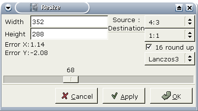

|
Návod na pøevod MPEG do AVI 1.Pøíprava Tato stránka slou¾í jako pøíklad kódování z MPEG-1 nebo MPEG-2 (napø. DVD) do AVI, kodekem XviD a zvukem v MP3.Avidemux podporuje pouze MPEG video (m1v a m2v) a MPEG program stream (mpg/vob). Stream musí být s jedním pohledem (ne multi angle), a nekódovaný. Nazvìme jej stream.mpg. Pokud je va¹ím zdrojem DVD, je dobré pou¾ít velmi spolehlivý MPlayer: mplayer -dvd 1 -dumpstream. Vytvoøí VOB soubor z DVD, který Avidemux umí naèíst. VDR momentálnì podporován není. Avidemux neumí pøímo èíst MPEG. Umí v¹ak naèíst jeho index. Index je textový soubor popisující MPEG a jeho snímky. Je velmi podobný struktuøe D2V programu DVD2AVI, výborného frameserveru pro Windows. Tento index Avidemuxu umo¾òuje pøímý pøístup v souboru s pøesností na snímky. Pro vytvoøení indexu máte dvì mo¾nosti:
Význam polo¾ek Select Index a MPEG je zøejmý. U zvukové stopy je nejjednodu¹¹í kliknout na Scan file for audio stream a chvíli poèkat. Rozbalovací nabídky se vyplní detekovanými audio streamy a jejich vlastnostmi (bitrate atd.). Kliknìte na OK a èekejte, vytváøí se index. Po dokonèení u¾ mù¾eme s MPEG souborem zaèít pracovat. 2.Editace videa Nìkterá DVD jsou zakódována s 23.976 fps, neboli FILM (vìt¹ina filmù). Nìkteré v¹ak jako 29.97 (NSTC), napøíklad seriály. V prvním pøípadì DVD pøehrávaè pøímo pøi pøehrávání provádí konverzi do NSTC formátu (telecine). Tak¾e hlavièka MPEGu v¾dy øíká 29.97, proto¾e to je finální formát. Avidemux pou¾ívá mpeg2dec k dekódování MPEG streamù (s malou úpravou). mpeg2dec neaplikuje telecine na FILM DVD (a je to tak lep¹í). To znamená, ¾e Avidemux neumí rozli¹it FILM a NSTC. Tak¾e kdy¾ MPEG vypadá jako progresivní (neprokládaný) a evidentnì se postupnì rozchází zvuk s obrazem (èím dál víc), pou¾ijte Misc->Change fps a nastavte hodnotu na 23.976. Pro MPEG v na¹í normì PAL to není problém, má v¾dy 25 snímkù za sekundu. Teï byste mìli mít nìco takového: 
Nastavíme si nìjaké filtry na obraz. F1 zobrazí seznam filtrù. 
Zvolíme filtr Crop (oøez), abychom se zbavili èerných okrajù. Pokud je obraz velmi èistý, mù¾ete zkusit tlaèítko Autocrop pro automatickou detekci. V na¹em pøíkladì jsou okraje velmi malé. Pro snadné rozli¹ení se zobrazují zelenì. 
Kdy¾ je obraz oøíznutý, zmen¹íme jej. Pro správnou zmìnu velikosti je velmi dùle¾ité vzít v úvahu pomìr stran. Pomìr stran je tvar bodu. Na PC je vìt¹inou ètvercový, na DVD mù¾e být 4:3 nebo 16:9. Tak¾e zadejte vstupní pomìr stran (16:9 je u DVD nejbì¾nìj¹í) a cílový pomìr stran (1:1 pro AVI, 4:3 nebo 16:9 pro DVD nebo SVCD). Poté zvolte metodu interpolace, bilineární je obvykle dostateènì dobrá pro zmen¹ení. Zøejmì budete chtít zatrhnout 16 round up, aby finální vý¹ka a ¹íøka byly násobky 16. Potom posuvníkem nastavte po¾adovanou velikost.  Podle toho jaký máte zdroj mo¾ná budete chtít pøidat dal¹í filtry (odstranìní prokládání a ¹umu, pøidání titulkù,...). Viz kapitola Obraz a filtry. Video je nyní pøipravené, je naèase nastavit jeho kompresi. Mù¾ete si je¹tì otevøít okno náhledu (Preview) a pohybovat se v nìm posuvníkem, náhledové okno se bude aktualizovat. 3.Nastavení enkodéru Pochopitelnì kdy¾ chceme komprimovat video, nastavíme video re¾im na Process (F5). Vybereme si kodek. Mé dva preferované jsou XviD a libavcodec. Na XviD mù¾ete pou¾ít návody pro Windows, nastavení je stejné. Pro libavcodec je dobrá dokumentace MPlayeru. Pro tento mininávod si zvolíme XviD.
Nejdøív si nastavíme umístìní log souboru pro dvouprùchodové kódování, proto¾e ho pozdìji mo¾ná budeme chtít pou¾ít, z nabídky Misc->Select Log File Configure codec otevøe tento dialog: 
Vybereme Two pass a zadáme finální velikost. To je velikost pouze videa bez zvuku, od celkové cílové velikosti tedy odeètìte velikost zvukové stopy. 4.Nastavení zvuku Pokud pou¾íváte audio stopu zvolenou pøi indexování, nemusíte nic dìlat. Externí zvukový soubor si mù¾ete vybrat z polo¾ky menu Audio->Source. Nastavit re¾im Process nebo ne? Pokud chcete zachovat zvuk beze zmìny, napøíklad XviD+AC3, nic nedìlejte a pøeskoète celou sekci. V opaèném pøípadì nastavte Process mód pro audio a (napøíklad) Normalize, 48->44.1. Podrobnosti jsou v kapitole Audio. Stejnì jako u video kodeku zvolte kodek, napøíklad MP3, a nastavte jej. My nastavíme 128 kbps joint stereo, jako na obrázku: 
5.Ulo¾ení Nakonec ulo¾te pomocí File->Save Video a poèkejte pár hodin. Hotovo. Avidemux provede první prùchod, potom druhý prùchod a kompresi zvuku. 
|